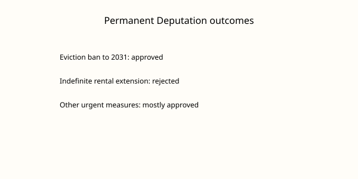

España · vivienda · 12 de noviembre de 2026
La Diputación Permanente convalida la mayoría de los decretos de vivienda, incluida la prohibición de desahucios hasta 2031.

Lo que coinciden los medios
El jueves 12 de noviembre la Diputación Permanente del Congreso de los Diputados convalidó la mayor parte del paquete de medidas urgentes de vivienda promovido por el Gobierno. Entre las medidas aprobadas figura la prohibición de desahucios hasta 2031. Se rechazó la prórroga automática indefinida de los contratos de alquiler. Las mismas medidas habían fracasado en octubre en el Pleno y contribuyeron al adelanto de las elecciones generales al 29 de noviembre. PP, Vox y Junts se opusieron a partes del decreto; el Gobierno lo sacó adelante con el apoyo de sus socios. La Comunidad de Madrid ya ha adelantado que no cumplirá el decreto dentro del ámbito de sus competencias. La votación se produce al día siguiente de la huelga general por la vivienda.
Lo que es solo una cita
Las declaraciones de la presidenta madrileña Isabel Díaz Ayuso sobre defender la propiedad y las de los socios del Gobierno pidiendo la dimisión del ministro del Interior por las cargas del 11N son posiciones políticas. No alteran el resultado de la votación en la Diputación Permanente. Las afirmaciones sobre el impacto económico de la prórroga de alquileres son proyecciones de partidos o de asociaciones; no son el texto del decreto.
Mecanismo que el lector necesita
La Diputación Permanente es el órgano que puede convalidar o derogar decretos-ley cuando el Congreso no está reunido en Pleno. Un decreto-ley tiene fuerza de ley desde su publicación, pero debe ser convalidado en el plazo de 30 días. La prohibición de desahucios hasta 2031 es una medida temporal de protección de inquilinos en situación de vulnerabilidad; su aplicación concreta depende de los juzgados y de las comunidades autónomas que tienen competencias en vivienda. El rechazo de la prórroga automática indefinida significa que los contratos de alquiler siguen sujetos a los plazos y condiciones de la Ley de Arrendamientos Urbanos vigente, salvo las modificaciones que el decreto sí haya introducido y que hayan sido convalidadas. Las comunidades que anuncian incumplimiento pueden recurrir o simplemente no aplicar las partes que consideren invasivas de su competencia; eso es un conflicto de distribución de competencias, no un hecho consumado hasta que haya resoluciones judiciales o administrativas.
La fotografía superior es del exterior del Congreso. No muestra la Diputación Permanente, los diputados ni el resultado de la votación. Es un still de localización del edificio.
Lo que esta noticia no es
No es la aprobación definitiva de una ley ordinaria. No es una garantía de que ninguna comunidad aplicará las medidas. No es un balance de la huelga del día anterior. El resultado de la votación en la Diputación Permanente es el hecho verificable; la eficacia territorial y los recursos posteriores son desarrollos futuros.

Artículos fuente y puntuaciones
Imágenes: Wikimedia Commons fotografía de tipo del Congreso de los Diputados vía Special:FilePath. El pie indica que no es la sesión. onerror al SVG local. Gráfico original SVG. No se usan pixels de agencias como src único.